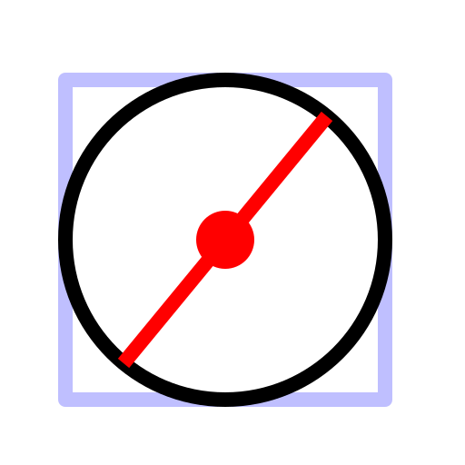

Zentrum, Durchmesser
Werkzeugleiste / Symbol:


Menü: Zeichnen > Kreis > Zentrum, Durchmesser
Tastenkürzel: C, A
Kommandos: circlediameter | ca
Beschreibung:
Konstruiert einen Kreis mit gegebenem Zentrum und Durchmesser.
Vorgehensweise:
- Geben Sie den Durchmesser in der Optionenwerkzeugleiste oder in der
Kommandozeile ein.
- Bestimmen Sie das Zentrum des Kreises mit der Maus oder geben Sie eine
Koordinate in die Kommandozeile ein.